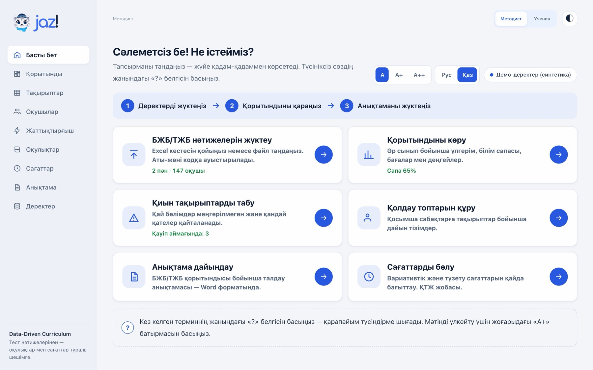
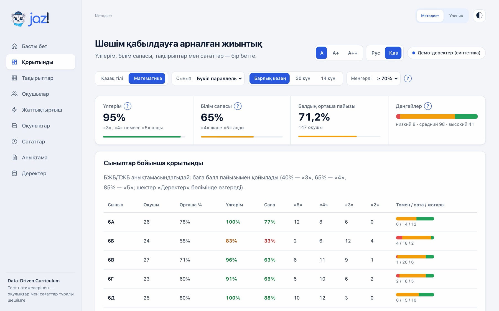
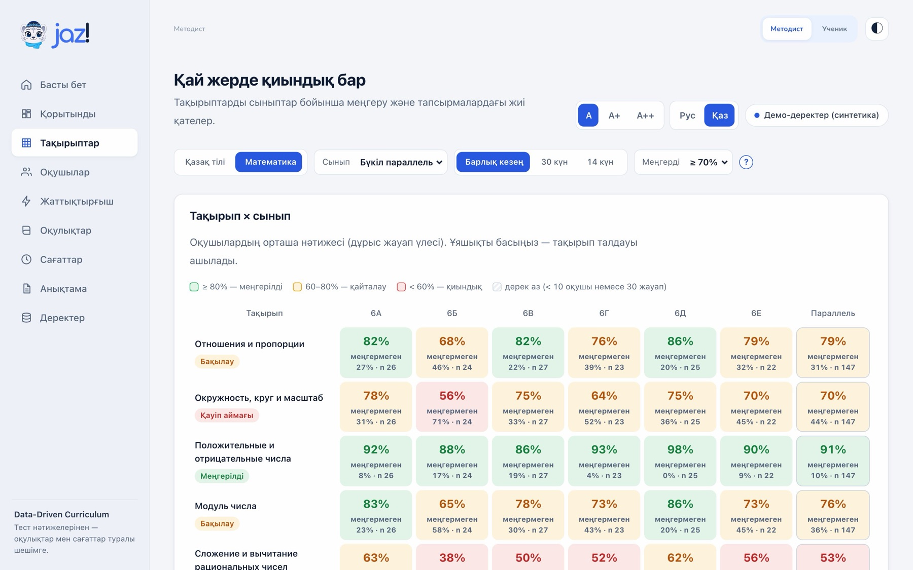
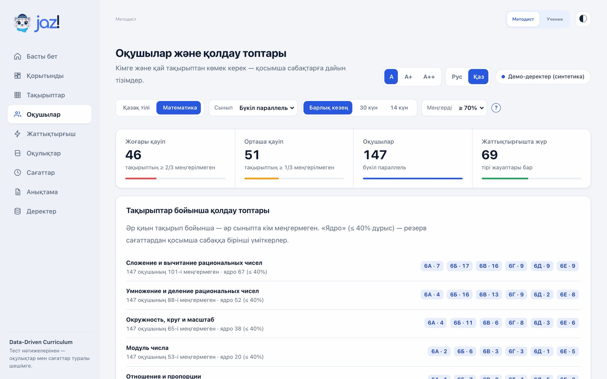
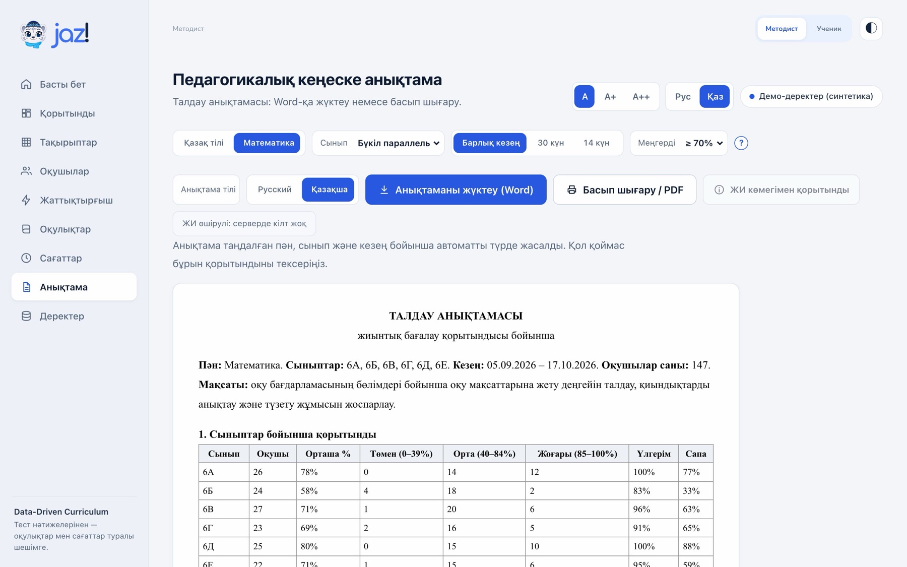
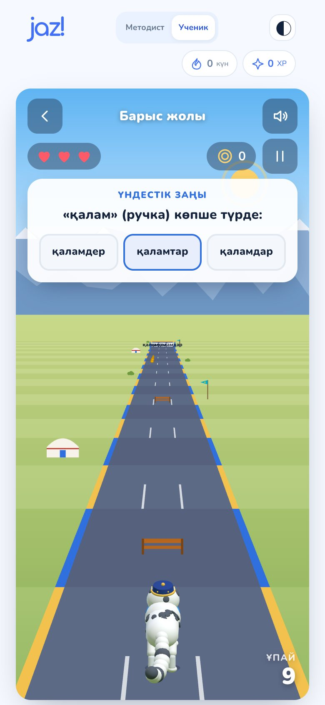
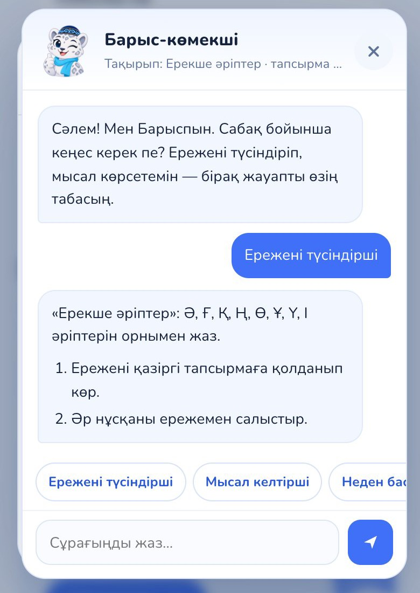

1-кейс · Data-Driven Curriculum
Jaz!
Әдіскерге арналған платформа: кез келген пән бойынша БЖБ/ТЖБ нәтижесін талдайды, кімге көмек керегін көрсетеді, анықтаманы өзі жазады. Оқушыны оқуға бейімдейді - әдіскерге бақылауды жеңілдетеді.
Мәселе
Бет01/10Әдіскер неге тап болады
БЖБ мен ТЖБ деректері бар.
Соларға сүйенген шешім - жоқ.
Әдіскер / директордың оқу ісі жөніндегі орынбасарыТәжірибелі педагог. Аналитикалық жүйелерде емес, Excel пен Word-та жұмыс істейді. Әр тоқсан сайын БЖБ/ТЖБ талдауына және түзету жұмысына жауап береді.
- 1Қолмен жинайды - әр мұғалімнен және электрондық журналдан БЖБ/ТЖБ кестелерін.
- 2Excel-де есептейді үлгерімді, білім сапасын, деңгейлерді - көшіргенде қате кетеді.
- 3Анықтама жазады әр сынып пен пән бойынша бір үлгімен.
- 4Көрмейді, қай тақырып кімде меңгерілмегенін - көмек «жадқа сүйеніп» беріледі.
- 5Сағаттар мен оқулықтарды цифрмен негіздемей, болжаммен бөледі.
Дәлелдер
Бет02/10мемлекеттік мектеп және 371,3 мың педагог - әр мектепте біреу БЖБ/ТЖБ-ны жинайды.
2024/25 · 24.kz, 15.09.2025
мұғалім аптасының сабақ емес бөлігі: дайындық, тексеру, есеп. Kundelik - күніне 1,5 сағатқа дейін.
Мәжіліс депутатының есебі · Informburo, 01.04.2026
оқушы ғана PISA-2025 математикасында базалық деңгейге жетті. Орташа балл - 414 (2022 жылы - 425).
Мемлекет басшысы педагогтарды қағазбастылықтан және шексіз есептерден арылтуды тапсырды.
ҚР Президенті Қ.-Ж. Тоқаев · Bes.media
Мәселенің құны
Бет03/10Бір мектеп · тек ТЖБ-ны жинау
Біздің болжамға негізделген есеп: 24 сыныпты мектеп, ТЖБ өтетін 8 пән, бір кестені жинауға, есептеуге және мәтінге 15 минут. «Дейін» және «кейін» уақытын пилотта өлшейміз.
ел көлемінде: 192 сағ × 6,9 мың мектеп. Бұл уақыт оқушыға емес, кестеге кетеді.
Есептер сабақтан кейін жасалады: мұғалім аптасының 36 сағатының тек 23-і - сабақ.
математика бойынша (PISA-2025). Тақырып олқылықтары уақытында көрінбесе, жинала береді.
Вариативті сағаттар мен оқулық таңдауы нәтижеге емес, пікірге сүйенеді: оқулық пен мұғалімнің әсері шатасады.
Шешім
Бет04/10Бір кесте жүктейсіз - алты дайын жауап.
- 1Жүктеу: Excel-ден қою немесе файл, орысша және қазақша бағандар, аты-жөні → кодқа.
- 2Қорытынды: әр сынып бойынша үлгерім, сапа, деңгейлер.
- 3Қиын тақырыптар: «тақырып × сынып» картасы және жиі қателер.
- 4Қолдау топтары: кімге және қай тақырып бойынша көмек керек.
- 5Сағаттар мен КТЖ: тақырып қажеттілігіне қарай түзету сағаттары.
- 6Анықтама: қазақша немесе орысша - бірден Word-қа.
Кез келген пән: математика, қазақ тілі, биология, тарих - кесте бірдей (оқушы, сынып, бөлім, балл). Пән Jaz!-ға тәуелді емес.

Қалай көрінеді
Бет05/10



Жұмыс істейтін прототиптің демо-деректердегі (синтетика) скриншоттары. A/A+/A++ қаріп өлшемі және «?» кеңестері - аға буынға ыңғайлы болу үшін.
Геймификация
Бет06/10Оқушыны оқуға бейімдейді - әдіскерге бақылауды жеңілдетеді.
- 1«Барыс жолы» - 3D-жүгіріс: қар барысы жүгіреді, оқушы бағдарлама тақырыбы бойынша жауап таңдайды.
- 2Қазақша чат қатені табады, ережені түсіндіреді және өзі түзетуге мүмкіндік береді.
- 3Барыс-көмекші (чиби) сабақ бойынша кеңес береді: ереже, мысал, неден бастау - бірақ жауапты айтпайды.
- 4Топқа бір басумен тапсырма: сынып коды → оқушы тапсырманы телефонынан көреді → жауаптар әдіскерге келеді.
- 5Жаттықтырғыштағы өсім БЖБ-дан бөлек. Ойын ресми бағаға әсер етпейді. XP, серия, белгілер ынталандырады.


БЖБ → көмек →
өсім → БЖБ
Цикл мектеп ішінде тұйықталады: тақырыпты көру → көмек тағайындау → келесі БЖБ-мен тексеру.
Бұрын → қазір
Бет07/10| Міндет | Бұрын | Jaz!-пен |
|---|---|---|
| Жинау | Әр мұғалімнің кестесі, қолмен көшіру | Excel-ден бір рет қою |
| Көрсеткіштер | Excel формулалары, көшіргенде қате | Үлгерім, сапа, деңгейлер - автоматты түрде |
| Қиын тақырыптар | Жұмыстарды қарап шығу, субъективті | «Тақырып × сынып» картасы, жиі қателер |
| Түзету жұмысы | «Жадқа сүйенген» тізімдер | Қолдау топтары + жаттықтырғышқа тапсырма |
| Сағат, оқулық | Болжам | Тақырып қажеттілігі бойынша есеп; оқулық - мұғалімді ескеріп |
| Анықтама | Word-тағы біркелкі мәтін | Word-та дайын анықтама, kk/ru |
| Уақыт | Тоқсанына ≈ 48 сағ (болжам) | Жүктеуге бірнеше минут + қорытындыны тексеру |
Адал аналитика
Бет08/10Оқулық - мұғалім ішінде
Оқулықтарды мұғалімнің әсерін ескеріп, сенімділік аралығымен салыстырамыз. Салыстыру мүмкін болмаса, қорытынды бұғатталады.
Дерек аз - солай жазамыз
10 оқушыдан немесе 30 жауаптан аз болса - «дерек аз» белгісі. Жиі қате - тапсырмаға кемінде 10 жауап болғанда ғана.
Екі деректер қабаты
БЖБ/ТЖБ - ресми көрсеткіштер мен анықтама. Жаттықтырғыш - тек өсім. Қабаттар араласпайды.
Дербес деректерсіз: аты-жөні кодқа ауыстырылады. ЖИ тек жиынтық сандарды алады және қорытынды мәтінін жазуға көмектеседі; шешімдер тексерілетін статистикаға сүйенеді.
Масштабтау
Бет09/10Прототип
- 6-сынып: қазақ тілі және математика, 15 тақырып
- Әдіскер кабинеті, анықтама kk/ru
- Бэкенд: сынып кодтары, тапсырмалар
1-3 мектеп
- Нақты ТЖБ (аты-жөнісіз)
- Әдіскер уақытын «дейін/кейін» өлшеу
- Шектерді білім бөлімімен тексеру
Бүкіл мектеп
- 5-11-сыныптардың барлық пәні (аналитика дайын, жаттықтырғышқа - сұрақтар банкі)
- МЖМБС оқу мақсаттары
- Рөлдер: мұғалім, әдіскер, оқу ісінің меңгерушісі
Аудан мен облыс
- Білім бөліміне мектептер бойынша жиынтық
- Электрондық журналдардан импорт (серіктестік арқылы)
- Тоқсандарды салыстыру, динамика
Команда
Бет10/10Shadil Nurmukhammed
Founder
Amangeldiev Kaisar
Co-founder
Сайт: jaz-kazakh-learning.vercel.app · Питч: /pitch.html